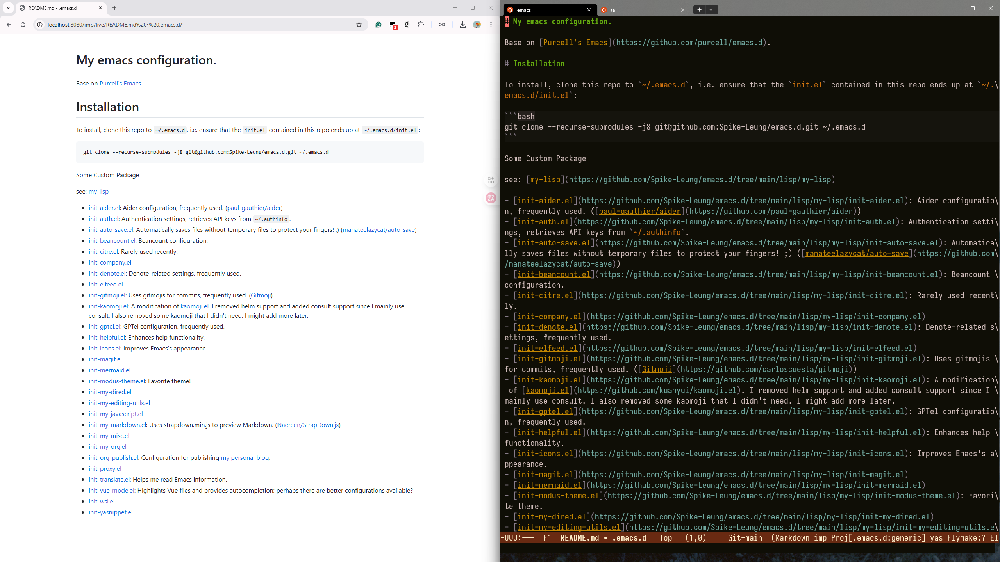

Emacs 实时预览 markdown
最近在写离职交接文档，打算把一些项目的 README.md 更新一下，便于后续的人了解项目。
Emacs 中可以集成 markdown-mode 扩展编辑 markdown 的能力，它默认用 EWW 进行预览，但 EWW 的样式相对比较简单。
我希望预览的 markdown 样式和实际在 GitHub/GitLab 上看到是差不多的，这样可以提前发现一些排版问题。
最早的时候，我参考 Live preview as you type，使用 Impatient Mode 和 StrapDown.js 渲染。
它的原理是开启一个 HTTP 服务，将 Emacs 中的 buffer1 渲染成 HTML 进行预览，每当 buffer 的内容变化，就主动发送新的 HTML 内容进行更新。
HTML 中加载 Marked，将 markdown 内容转换 HTML 标签展示。
尽管 StrapDown.js 提供了不少 主题，但都和 GitHub 上的样式有差异。
主题其实就是加载 CSS，所以，通过替换对应的 CSS 文件，就可以实现 GitHub 的 markdown 样式，例如使用 github-markdown-css。
最终，我就得到这样一个 markdown 的实时预览方法:
init-my-markdown.el
;;; init-my-markdown.el --- use impatient-mode to preview markdown ;;; Commentary: ;;; @see: https://wikemacs.org/wiki/Markdown#Live_preview_as_you_type ;;; Code: (maybe-require-package 'impatient-mode) (defun spike-leung/imp-markdown-filter (buffer) "Define imp markdown filter. Wrap BUFFER with HTML, render with https://github.com/markedjs/marked and style with https://github.com/sindresorhus/github-markdown-css" (princ (with-current-buffer buffer (format "<!DOCTYPE html> <html> <title>Markdown Preview</title> <head> <link rel=\"stylesheet\" href=\"https://cdnjs.cloudflare.com/ajax/libs/github-markdown-css/5.8.1/github-markdown.min.css\" integrity=\"sha512-BrOPA520KmDMqieeM7XFe6a3u3Sb3F1JBaQnrIAmWg3EYrciJ+Qqe6ZcKCdfPv26rGcgTrJnZ/IdQEct8h3Zhw==\" crossorigin=\"anonymous\" referrerpolicy=\"no-referrer\" /> <style> .markdown-body { box-sizing: border-box; min-width: 200px; max-width: 980px; margin: 0 auto; padding: 45px; } @media (max-width: 767px) { .markdown-body { padding: 15px; } } </style> <script src=\"https://cdn.jsdelivr.net/npm/marked/marked.min.js\"></script> </head> <body> <div id=\"markdown-body\" class=\"markdown-body\"></div> <script> document.getElementById('markdown-body').innerHTML = marked.parse(%s); </script> </body> </html>" (json-encode (buffer-substring-no-properties (point-min) (point-max))))) (current-buffer))) (defun spike-leung/preview-markdown () "Live Preview markdown." (interactive) (imp-visit-buffer) (imp-set-user-filter 'spike-leung/imp-markdown-filter)) (defun spike-leung/disable-preview-markdown () "Disable preview markdown." (interactive) (progn (httpd-stop) (impatient-mode -1) (imp-remove-user-filter))) (provide 'init-my-markdown) ;;; init-my-markdown.el ends here
效果图：

在 Markdown 预览的效果有点差强人意 里我还找了其他的一些方案，感兴趣可以看看：
- vmd-mode.el 快速的 Github 风格 Markdown 预览，与 emacs 缓冲区的更改同步（无需保存）。
- livedown.el Livedown 的 Emacs 插件。
- FLYMD 即时 Markdown 预览。
- grip-mode 使用 grip 实时预览 Github 风格的 Markdown/Org 文件